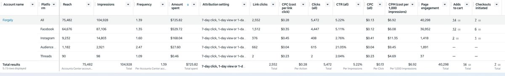
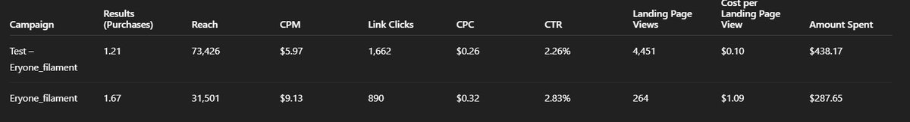
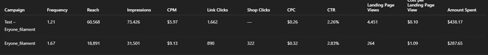
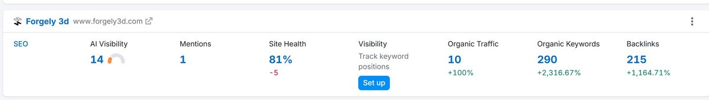

Case Study · Paid Social · SEO Research · Growth Strategy
Forgely makes 100% American-manufactured 3D printing filament to tight tolerances. They had a great product and a brand-new digital storefront — but no one knew they existed yet. I built and ran their paid social engine — and provided the data research and strategic intelligence that fueled their SEO growth too.
75,482
Total paid reach
5.22%
CTR — 6× industry avg
$0.13
CPC — vs $0.50–1.50 avg
+100%
Organic traffic growth
+2,317%
Organic keyword growth
+1,165%
Backlink growth
The Challenge
Forgely walked away from the crowded toy printing market to do one thing exceptionally well: manufacture tight-tolerance filament entirely in the USA. The product was ready. The new storefront — built to handle everything from hobbyist single spools to wholesale print farm accounts — was live. But in a market dominated by cheap overseas brands, awareness was zero.
The goal was two-pronged: put Forgely's filament in front of the right people through paid social, and provide the data research and strategic intelligence the web team needed to build out their organic presence from scratch.
The Approach
3D printing is a passionate, tight-knit community. Generic ads don't work here — the audience can smell inauthenticity immediately. I built a Facebook and Instagram paid advertising strategy rooted in product specificity and American manufacturing pride, targeting makers who care about what goes into their machines.
01 · Strategy
Dual-brand product advertising
Ran separate paid campaigns for both ERYONE and Forgely-branded filament lines, allowing precise audience segmentation between budget-conscious hobbyists and premium print farm buyers.
02 · Targeting
Niche audience precision
Built custom audiences around 3D printing communities, maker culture, and filament-specific interests on Facebook and Instagram — putting ads directly in front of people already in the ecosystem.
03 · Creative
Team creative direction
Collaborated closely with Bill and Tyler on ad creative and team messaging — developing ideas that energized their internal team and translated directly into sales-driving content.
04 · Optimization
Continuous performance tuning
Monitored campaign performance over 6 months, iterating on audiences, creative, and spend allocation to push reach higher and tighten cost efficiency as data accumulated.
The Research
Beyond paid social, I provided the web team with the competitive research, keyword data, and strategic direction that powered Forgely 3D's SEO growth. This included identifying the right keyword targets for a niche manufacturing audience, analyzing competitor gaps, and translating that intelligence into actionable recommendations.
The results speak for themselves: organic keywords grew by over 2,316%, backlinks by 1,164%, and organic traffic doubled — all from a standing start. That's what happens when paid strategy and organic research work from the same intelligence.
The Data
Here's a look at the actual campaign performance data — across the full account and broken down by campaign.
Full Account Performance — Facebook, Instagram & Audience Network

Tap to enlarge
Campaign Breakdown — ERYONE & Forgely Filament Lines

Tap to enlarge
Campaign Detail — Impressions, Shop Clicks & Landing Page Views

Tap to enlarge
SEO Growth — Forgely 3D Organic Performance

Tap to enlarge
The Results
Over six months, paid social transformed Forgely from unknown to discoverable. On a lean $725.82 budget, the campaigns outperformed industry benchmarks across every key metric.
Ashley comes up with ideas that energize our team and drafts creatives that actually generate sales.
— Bill & Tyler · Owners, Forgely
Ready to put your product
in front of the right people?
Let's build a paid social strategy that actually moves the needle.
Work With Me →